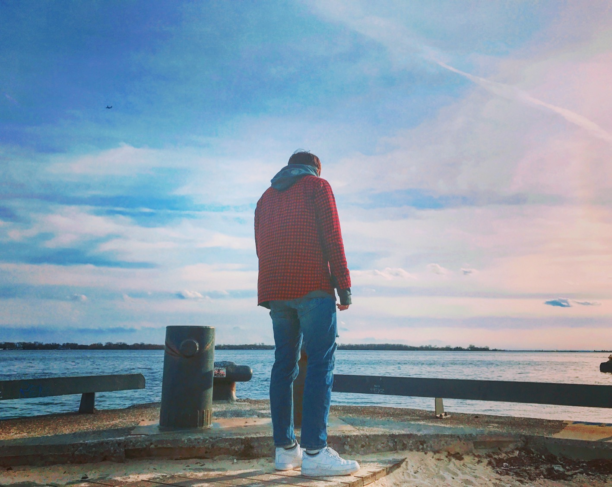

Hello, my name is Mason Myeoungryeul Yang, I'm a UI/UX designer born in Seoul. My hometown Seoul, South Korea is fascnating county. There are plenty of design that I was inspired.
I majored in entertainment marketing in South Korea. I learned how business works through this major. I came to Canada and I started studying UI/UX Design. Moreover, studying C# such as HTML, CSS, and Java, and am improving the completeness of UI and UX design based on my understanding of user flow. Adobe skills and C# also improved by redesigning YELP, branding the homepage of a new cafe, and making my portfolio. I also like hip-hop music and write my own lyrics and sing it. While doing music, I developed a passion for creation and became more patient until good results were achieved. I don’t like to be immersed in one thing before or now.
I would like to welcome fresh and new ideas, so don't hesitate to get in touch with me.
